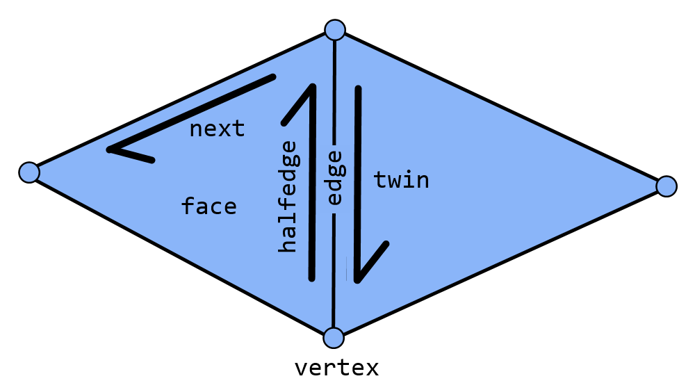
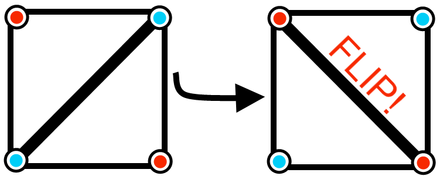

This page describes an algorithm and implementation for computing Delauney Triangulations
that I designed and implemented during January of 2016.
A
triangulation T(P) is a mapping from a set of points
P to a set of triangles
T such that:
- T only contains vertices at points in P
- T fills the convex hull of P
- T does not contain overlapping triangles.
FIXME: Add more illustrative Pictures.
A
halfedge mesh is a data structure for efficiently storing the connectivity information defined for a manifold polyhedral mesh with possible boundaries.
Manifold just means that every neighborhood for ever vertex looks roughly like a circle which prevents certain degeneracies such as edges contained in more than 2 possible faces.

Half Edge Mesh Connectivity
A
sweep line refers to a common class of computational geometry algorithms that sort the data in space and then gradualy solve the problem from in spacial order.
For instance, in the computation of triangulations we will compute the triangulation for the leftmost 3 points and then compute the triangulation for the leftmost
4, 5, 6, etc points, therebye solving the problem successively in left to right spatial order.
A point is said to be an
exterior point with regards to
T
if and only if it is not contained within any triangles in
T.
A exterior point
e is said to be
visible with regards to a vertex
v within
T
if and only if the ray from
e through
v does not intersect any triangles in
T
addExteriorPointToTriangulation()
Here is an algorithm for adding an exterior point
e to a well formed half edge mesh.
- Find a half edge on the border of the triangulation originating at a vertex v
such that is visible from e.
- Transverse the halfedge boundary from v to find the first and last points in the
external face that are visible from e. Call them p0 and p1
- Add the fan of triangles formed by the the endpoints of the halfedges from p0 and p1 and the third point e to the half edge mesh.
- Link up all of the half edge mesh connectivity information to restore the half edge mesh invariants.
An implementation of this algorithm may be found
here.
initTriangulation()
Here is naive algorithm to compute
T(P) based on my
function found
here.
It forms and uses a halfedge mesh structure in addition to the concept of a sweep line.
- Sort P by y coordinate, then sort in place by x coordinate.
- Instantiate a Half Edge mesh representation H.
- Initialize H with the trivial triangulation for the first 2 points.
- In order, add each point to the triangulation. Since they are sorted they are all exterior points relative to their respective states of H.
Therefore we can simply use the algorithm stated above.
We now have a naive triangulation that looks something like the following image for a rectangularly bounded set of randomly chosen points:
A triangulation
T(P) is said to be delauney if for every triangle
s,
the circumcircle of
s contains no points in
p beyond those in
s.
Thankfully we can narrow down delauneyness to a local property of edges.
An edge is delauney if its exterior triangle angles sum up to less than 180 degrees.
A function may be written as follows to determine this for an edge in a half edge mesh:
// Assumes that this is a triangle mesh.
public boolean isDelauney(Edge edge)
{
// Find the relevant 4 vertices.
HEdge he1 = edge.edge;
HEdge he2 = he1.twin;
// Inner vertices on the edge.
Vertex i1 = he1.vertex;
Vertex i2 = he2.vertex;
// outer vertices.
Vertex o1 = he1.prev.vertex;
Vertex o2 = he2.prev.vertex;
// We don't really care about the orientation, because the problem is symmetrical.
// An edge is delauney if its exterior triangle angles sum up to less than 180 degrees.
return GeometricQueries.angle(i1, o1, i2) +
GeometricQueries.angle(i1, o2, i2) <= Math.PI;
}
Please note that the definition for GeometricQueries.angle may be found
here.
If an edge is shared by two triangles, then it may be
flipped by connecting it to the two end points of the two triangles that it was not previously connected to as shown in the following figure:

Triangle Mesh edge flipping
We can then convert any triangulation, including our naive triangulation into a delauney triangulation
by randomly flipping any edges which are not currently delauney. Eventually after a random number of flips (around N log N in expectation), all
edges will be delauny and therefore the entire triangulation will be delauney.
An implementation of this algorithm may be found
here.
We now have a delauny triangulation which will look something like the following for another set of random points.